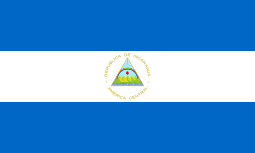

Existem duas teorias predominantes sobre como o nome "Nicarágua" surgiu. A primeira é que o nome foi cunhado pelos colonos espanhóis com base no nome Nicarao,[11] que era o chefe ou cacique de uma poderosa tribo indígena encontrada pelo conquistador espanhol Gil González Dávila durante sua entrada no sudoeste da Nicarágua em 1522. Essa teoria sustenta que o nome Nicarágua foi formado a partir de Nicarao e agua (em espanhol, "água"), para referir o fato de que existem dois grandes lagos e vários outros corpos de água no país. No entanto, a partir de 2002, foi determinado que o nome real do cacique era Macuilmiquiztli, que significava "Cinco mortes" na língua Nahuatl, em vez de Nicarao.[12][13][14][15] A segunda teoria é que o nome do país vem de qualquer uma das seguintes palavras nahuatl: nic-anahuac, que significava "Anahuac chegou até aqui" ou "os Nahuas chegaram até aqui" ou "aqueles que vêm de Anahuac chegaram até aqui"; nican-nahua, que significa "aqui estão os nahuas"; ou nic-atl-nahuac, que significa "aqui pela água" ou "cercado por água".[16][17]